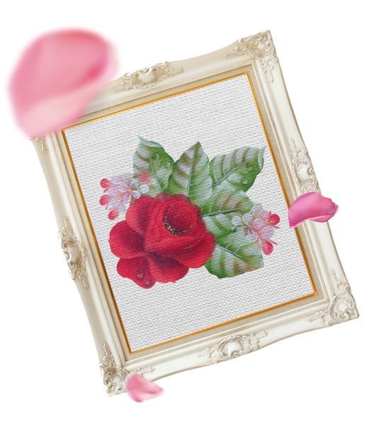
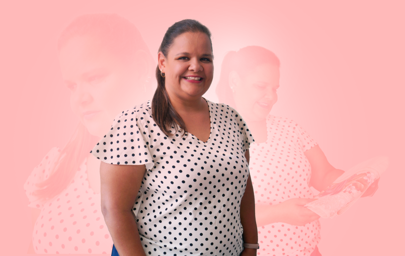

WORKSHOP 100% GRATUITO • AULAS AO VIVO NO YOUTUBE • AULAS 100% PRÁTICAS
O que você aprenderá nessa jornada?

Para quem é o Workshop?
- Profissional experiente
- Técnicas iniciantes e intermediárias na pintura em tecido
- Evento para iniciantes ou experientes
- Projeto prático do início ao fim
- Comunidade exclusiva para tirar dúvidas

Quem é Maria Sampaio?
A pintura em tecido e a técnica de crochê apareceram na minha vida aos meus 10 anos de idade. Uma criança, órfã de mãe, responsável e muito sonhadora, por muitos anos trabalhar com a minha arte era apenas um sonho.
Por anos trabalhei em empresas privadas, casei, criei os meus dois filhos, construi a minha família e aquele sonho ainda permanecia escondidinho.
Até que em 2020 tomei a grande decisão e coragem de deixar de ser CLT e passar a empreender no meu próprio negocio e viver da minha arte.
Todo o meu trabalho é realizado com responsabilidade, compromisso, muito carinho e dedicação.
O meu maior prazer e alegria é quando vejo uma peça feita por mim tomando forma e a admiração dos meus clientes ao receber os seus produtos.